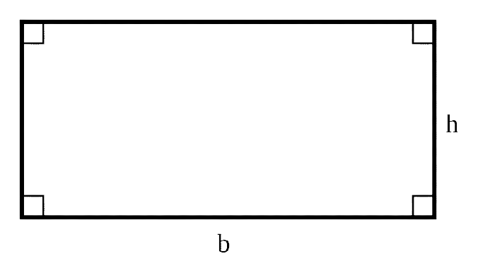

FORMAS GEOMETRICAS
escolha uma das formas geometricas abaixo:
Circulo
O círculo ou disco é uma figura que pertence à geometria plana e é formada por um conjunto de pontos
dentro do plano, cuja superfície é limitada por uma circunferência. Dito isso, a circunferência,
por sua vez, corresponde ao espaço geométrico de uma região circular.
clique na imagem para calcular a área do circulo :
Triangulo
Um triângulo é uma figura geométrica plana que possui três lados, embora seu nome indique
que o triângulo seja um polígono que possua três ângulos. Na realidade, os triângulos podem ser
definidos de três maneiras: polígono que possui três lados, três ângulos internos ou três vértices.
clique na imagem para calcular a área do triangulo :
Quadrado
O quadrado é um quadrilátero regular congruente, ou seja, uma figura geométrica com quatro lados
de mesmo comprimento e quatro ângulos retos.
clique na imagem para calcular a área do quadrado :
Retangulo
Um retângulo é um quadrilátero que possui todos os ângulos internos congruentes. Assim percebemos que todo
retângulo é também um paralelogramo, cujos ângulos internos são ângulos retos. O quadrado é um caso
particular de um retângulo em que todos os lados têm o mesmo comprimento
clique na imagem para calcular a área do retangulo :

Losango
O losango é um quadrilátero que possui todos os lados congruentes. O losango é um polígono
estudado na Geometria Plana. Ele é um quadrilátero que possui os quatro lados congruentes,
ou seja, com a mesma medida. Assim como os demais polígonos, o losango é composto por vértices,
ângulos e lados.
clique na imagem para calcular a área do losango :
Poligono
A fórmula simples para achar a área de um polígono regular (com todos os lados e todos os ângulos iguais) é:
área = 1/2 x perímetro x apótema. Em outras palavras, essa fórmula quer dizer que: Perímetro = a soma do
comprimento de todos os lados.
clique na imagem para calcular a área de um poligono :
Tronco da piramide
Tronco de pirâmide é o sólido geométrico encontrado na parte inferior da pirâmide quando nela é realizada uma secção transversal, a qualquer
altura. A secção transversal é um corte feito por um plano paralelo à base do sólido geométrico
clique na imagem para calcular o tronco da piramide :
Coroa do circulo
A área da coroa circular representada pode ser calculada através da diferença entre as áreas
totais das duas circunferências, isto é, área do círculo maior menos a área do círculo menor.
clique na imagem para calcular a coroa do circulo :

Trapézio
Para calcular a área de um trapézio qualquer, somamos os comprimentos da base maior
com o da base menor, multiplicamos o resultado da soma pela altura do trapézio e dividimos
o produto por dois.
clique na imagem para calcular a área do trapezoide irregular :

Setor circular em um circulo alinhado
é a região interna da circunferência, limitada por dois raios e um arco de círculo.
A área do setor circular é como uma fatia da circunferência.
clique na imagem para calcular o setor circular :